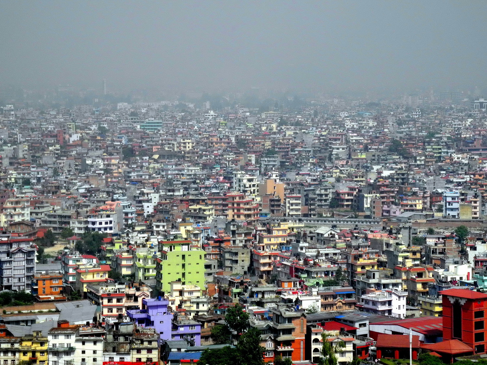
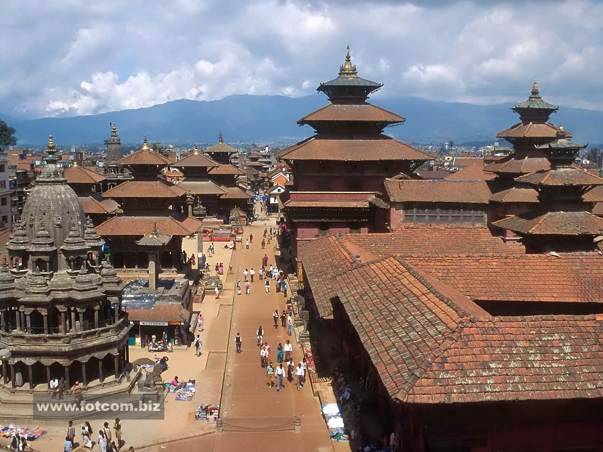

Nepal has a rich and a most diverse culture because of its unique location between the world’s two largest and ancient civilizations. Nepal is the Holy Land of Lord Pashupatinath and Gautam Buddha, where the Hindus and Buddhists have coexisted for centuries in total harmony. Lord Buddha, the ‘light of Asia’, was born in Lumbini in Nepal’s southern plains, which makes Nepal a scared pilgrimage destination for all Buddhists as well. The Temple of Pashupatinath is Nepal’s most scared Hindu shrine and one of the four most important sites in the world for Shiva worshippers. The three ancient cities of the Valley - Kathmandu, Patan and Bhaktapur represent an epitome of harmony in urban design, elegant architecture and refined culture.